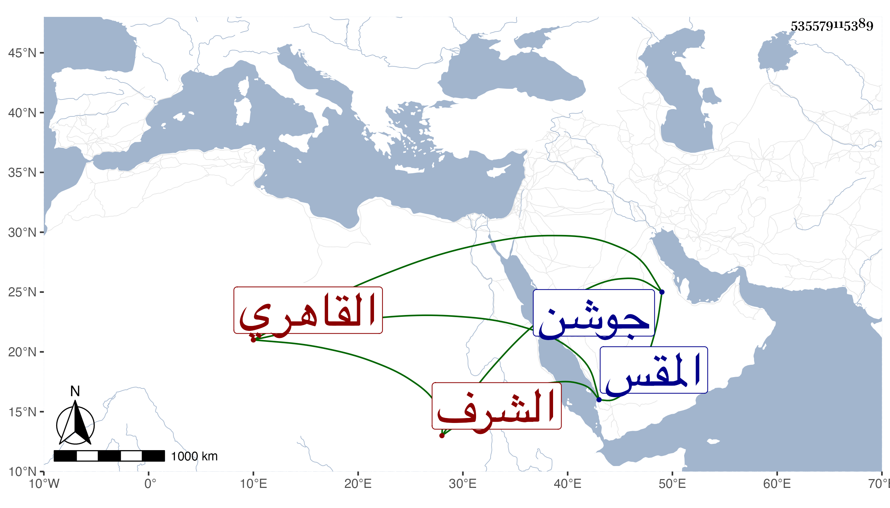

0902Sakhawi.DawLamic.ITO20230111-ara1.EIS1600.535579115389
Biography ID: 535579115389
479
عيسى بن أحمد بن عيسى بن أحمد الشرف القاهري نزيل المقس ومؤدب الأطفال . اشتغل بتجويد القرآن والكتابة ونسخ بخطه من المصاحف نحو الخمسمائة خارجا عن الربعات وغيرها وكنت ممن قرأ عنده في الصغر يسيرا ، ولم يكن بذاك النير وكان مقصودا من النساء بكتابة ما يروج به بينهن . مات في ليلة الجمعة سابع عشري رمضان سنة خمس وستين ودفن تجاه جوشن وهو والد أبي الفتح محمد الكتبي والد محمد الآتيين بل كان لصاحب الترجمة ابن اسمه أحمد قريب الشبه به عفا الله عنهما وإيانا .
